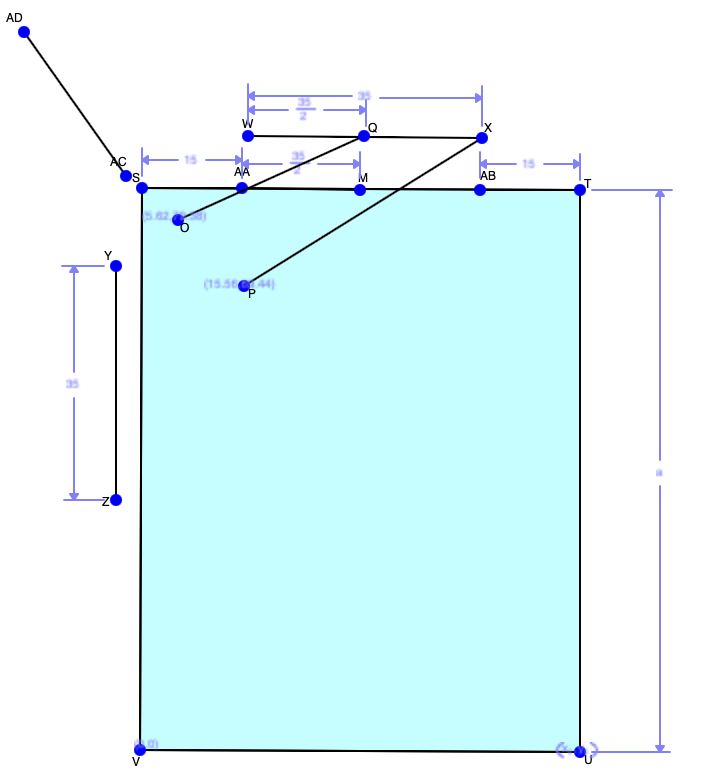
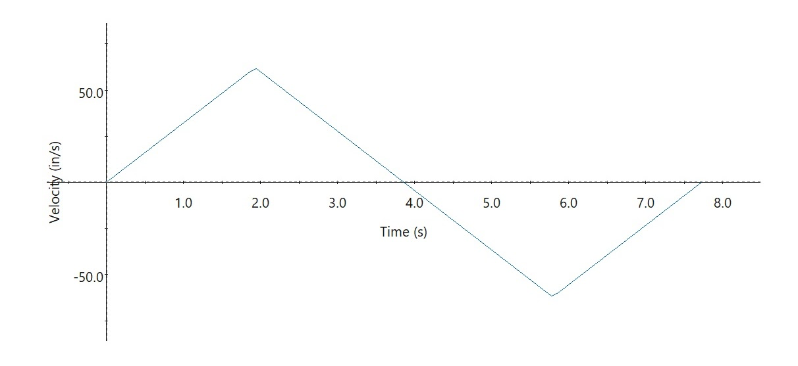
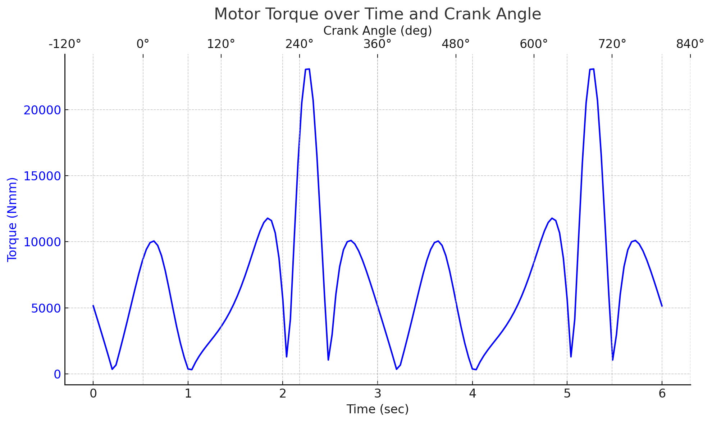
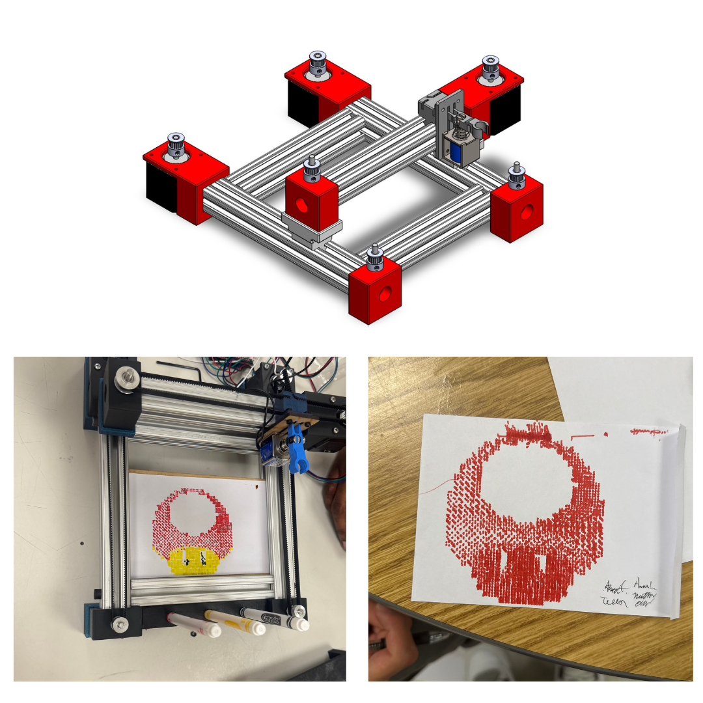
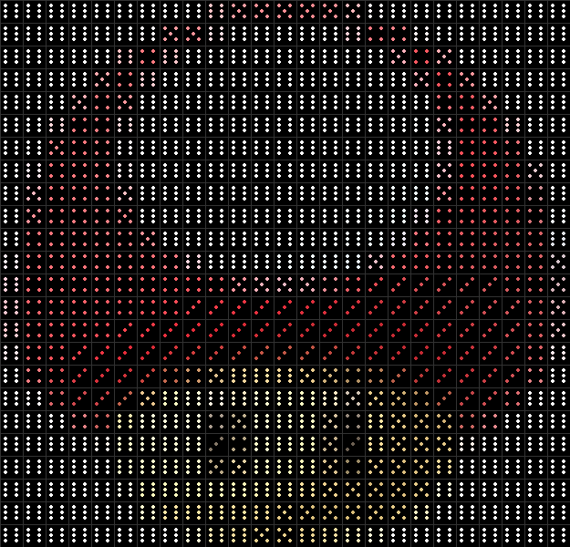
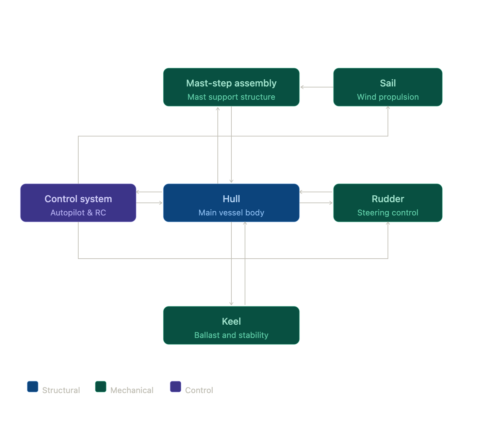
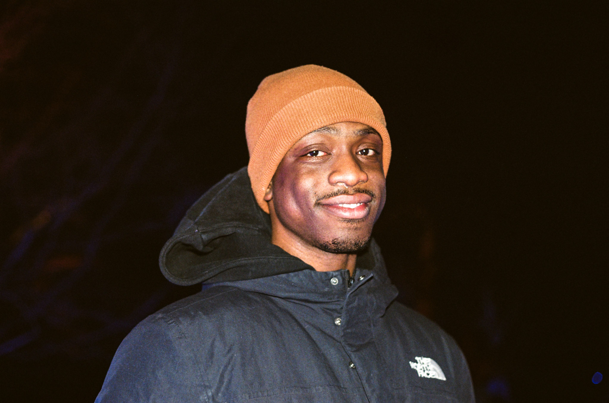
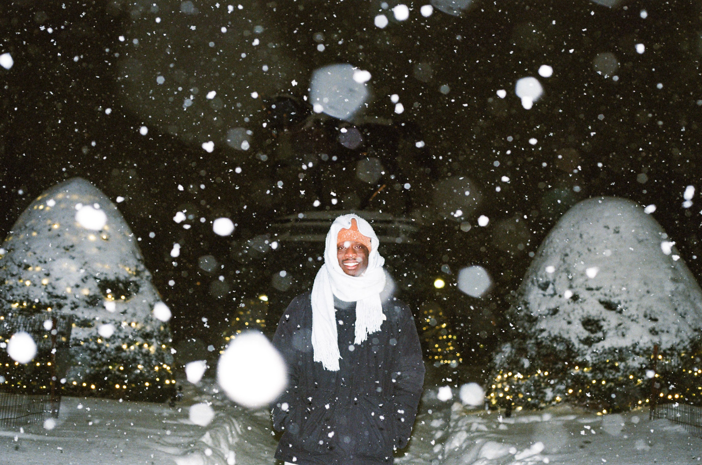
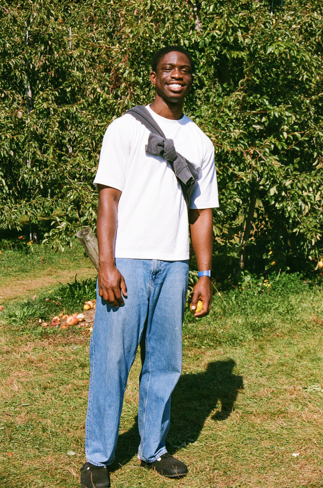

I am Andy O. Asante, a Mechanical Engineering student at
Boston University, expected to graduate in May 2026. My interests
center around manufacturing, electromechanical design, construction systems,
controls, and hands-on product development.
I currently work as a Lab Assistant at Boston University’s
Engineering Production Innovation Center, where I help students operate advanced
fabrication equipment including 3D printers, laser cutters, and CNC mills. This role
has strengthened my understanding of manufacturing workflows, safety practices,
prototyping, and the importance of translating design ideas into physical systems.
My previous experience includes working as a Downstate Contractor Oversight
Intern at National Grid, where I tracked field reports, reviewed operator
qualifications, supported documentation workflows, and observed utility infrastructure
operations across active job sites. I also worked as a Construction Intern at
Gilbane Building Company, managing project documentation, RFIs, submittals,
and coordination with project managers.
Across my work, I enjoy projects that combine mechanical design, fabrication, software,
and real-world testing. Whether I am building a motion system, working with controls,
supporting fabrication in a lab, or documenting a construction workflow, I am drawn to
the process of turning complex problems into practical engineered solutions.
Portfolio
This portfolio highlights engineering projects involving mechanical design,
fabrication, controls, software, testing, and system integration.
ME 360 is a hands-on, project-based course focused on electromechanical design.
The course combines mechanical structures, sensors, actuators, Arduino control,
SolidWorks simulation, physical prototyping, and dynamic system analysis.
This project focused on developing a four-bar mechanism that could automate the
movement of a trash tray toward the back opening of a bin after a user deposits trash.
Design Process
The mechanism was first modeled geometrically to determine pivot locations and link
lengths. After evaluating constraints, the linkage geometry was refined so that the
motion path stayed compact and feasible within the trash bin structure.

Motion Study
The final geometry was transferred into SolidWorks, where an oscillating rotary motor
was used to simulate the driving link. The final motion required approximately
206 degrees of rotation.
Motor Speed Control & Dynamic Beam Transport
Objective
This project involved designing a system capable of transporting a vertical aluminum
beam across a 10-foot distance and back without toppling. The goal was to minimize
travel time while maintaining stability.
Control Strategy
An Arduino and encoder feedback were used to measure motor speed and adjust motion.
The system relied on controlled acceleration and deceleration to prevent the beam from
tipping during transport.

Result
The final prototype completed the motion without the beam falling. The real-world run
took 11.50 seconds, which was slower than the theoretical optimum due
to surface roughness, motor variation, and traction limitations.
Four-Bar Linkage Tutorial & Force Analysis
Objective
This project simulated a four-bar linkage mechanism to analyze motor torque, bearing
forces, and power requirements. The mechanism was modeled in SolidWorks and driven
through a rotary motor for dynamic analysis.
Results
The maximum motor torque was approximately 23.07 N·m, occurring
around a crank angle of 273.6 degrees. The estimated minimum power
requirement at 600 rpm was approximately 442.1 W.

Cartesian Motion System

This project involved designing, building, and demonstrating a 2.5-DOF Cartesian
plotting system capable of rendering multi-color dot-matrix images on a 6 inch by
4 inch workpiece using a solenoid-driven marker end effector.
System Design
The system used aluminum extrusion rails, stepper-driven belt stages, 3D-printed
brackets, a solenoid marker mechanism, and an Arduino-based control system. Python was
used to convert images into G-code instructions for dot placement.

Testing
The final prototype successfully plotted a multi-color Toad sprite using sequential
red, yellow, and black marker passes. The system demonstrated sub-millimeter
repeatability and completed full print cycles in approximately 10 minutes.
ME 461 Autonomous Sailboat
The ME 461 Autonomous Sailboat project focused on designing, fabricating, and testing
a 6-foot wind-powered autonomous sailboat capable of navigating a freshwater course
using GPS waypoint tracking. The project required full-system integration across
mechanical design, fabrication, controls, electronics, waterproofing, and field
testing.
Project Objective
The goal was to build a sailboat capable of autonomous navigation over a 250–500 meter
freshwater course while relying primarily on wind propulsion. Key targets included
GPS waypoint navigation, manual override capability, watertight hull performance,
stable operation under load, and compatibility with ArduPilot and Mission Planner.
System Overview

The autonomous sailboat was developed as a modular electromechanical system made up of
six major subassemblies: hull, mast-step assembly, sail, rudder, keel, and control
system. The hull served as the main structural platform, while the other systems were
integrated around stability, waterproofing, weight distribution, and navigation
requirements.
Hull
The hull functioned as the primary structural body of the vessel and supported all
other subassemblies. A flat-bottomed sharpie hull was selected for stability and
low-speed maneuverability. It was built using a stitch-and-glue method, then sealed
with fiberglass, epoxy, and gel coat.
Mast-Step Assembly
The mast-step assembly supported the mast and transferred sail loads into the hull.
It was made from 6061 aluminum and designed to allow horizontal translation of the
mast, helping the team adjust center of gravity during testing.
Sail
The sail system used a rigid wingsail concept with a NACA 0012 airfoil profile. The
structure included an aluminum mast, laser-cut balsa ribs, balsa leading-edge
components, carbon fiber rods, and Monokote wrapping. A rear trimming sail acted as a
control surface for adjusting the sail angle.
Rudder
The rudder was responsible for steering the sailboat and was mounted along the
longitudinal centerline at the transom. It was CNC machined from 6061 aluminum and
connected to a servo-driven linkage system.
Keel
The keel provided lateral resistance and directional stability. It was fabricated from
aluminum sheet and attached to reinforced hardpoints in the hull using angle brackets.
Control System
The control system acted as the decision-making and communication hub of the sailboat.
It used a Pixhawk 2.4.8 flight controller running ArduPilot, with Mission Planner used
for calibration, telemetry, and waypoint planning.
Controls & Electronics
The Pixhawk received GPS, telemetry, wind sensor, and RC transmitter inputs while
outputting control signals to the rudder servo, sail servo, and thruster ESC. This
architecture allowed the boat to operate in both autonomous waypoint mode and manual
override mode.
Power was supplied by a 12 V LiPo battery connected to a power module that regulated
the system down to 5 V and 3.3 V rails. Sensor input included a GPS NEO-M8N module,
telemetry radio, RS485 wind speed sensor, and RS485 wind direction sensor through an
SP3485 RS485-to-UART interface.
Testing & Results
The prototype went through hull, stability, controls, and full-system testing. Initial
hull tests identified leaks that were corrected using additional gel coat, epoxy, and
silicone. Stability testing showed that the boat returned upright from a 30-degree
lean with major components installed.
Indoor controls testing confirmed manual control of the sail and rudder, GPS/compass
calibration, and wind sensor communication. Outdoor testing demonstrated a successful
short autonomous waypoint mission of approximately 25–50 meters. The full 250–500
meter course was not completed due to high wind, water currents, stability challenges,
and outdoor sensor communication issues.
Reflection
This project showed how complex real-world engineering becomes when mechanical
systems, electronics, controls, software, and environmental uncertainty are combined.
It strengthened my understanding of system integration, fabrication planning,
controls troubleshooting, and iterative testing under real field conditions.
Personal



Outside of engineering, I enjoy exploring new places, documenting moments, and
creating visual work. I see creativity as another form of problem-solving — whether I
am walking through a city with a film camera, designing a graphic layout, or editing a
video.
Exploration
I enjoy exploring cities, neighborhoods, museums, parks, and local spaces that reveal
how people live, build, and interact with their environment. Exploring helps me stay
curious and gives me new perspectives that influence how I think about design,
engineering, and storytelling.
Film Photography
Photography is one of my favorite ways to slow down and observe the world. I am
especially interested in film photography because it feels intentional and hands-on.
The process of choosing a frame, working with limited shots, and waiting to see the
final images makes each photo feel more meaningful. I enjoy capturing friends, city
life, architecture, and small everyday moments that feel honest and easy to miss.
I also enjoy graphic design and digital media work using Adobe Photoshop, After
Effects, and Premiere Pro. I like using these tools to create visuals, edit videos,
design layouts, and experiment with motion graphics.
Creative Perspective
Whether I am building mechanical systems, editing a video, or taking photos, I enjoy
projects that combine technical skill with creativity. My personal interests help me
bring a more visual and human-centered perspective to my engineering work.
Film Gallery
A collection of film photographs focused on people, city movement, architecture, and
everyday scenes.
A portrait taken inside a New York City subway car. I liked the warmth of the flash,
the soft film grain, and the contrast between the subject’s stillness and the movement
of the train environment.
A city park scene filled with people, greenery, signs, and movement. I liked how the
frame captures the layered rhythm of New York — relaxed, crowded, and constantly shifting.
A quiet Bryant Park moment framed through trees, umbrellas, flowers, and city architecture.
I liked how the light makes the scene feel calm even though the park is full of activity.
An open lawn surrounded by trees and tall buildings. This image captures the kind of
breathing room that makes a dense city feel softer and more human.
A study of interior architecture, light, and movement. The staircase, stone surfaces,
chandelier, and people moving through the frame create a formal but living composition.
A street photograph focused on repetition, movement, and urban rhythm. The line of
motorcycles, pedestrians, buildings, and traffic gives the photo a strong sense of city pace.
A group portrait from a day out in the city. This photo feels personal because it captures
a shared moment with friends rather than only focusing on the location.
A self-portrait through a car mirror. I liked how the mirror creates a frame within the
frame, making the camera and the act of taking the photo part of the image itself.
A film photo from an industrial site visit. I was drawn to the pipes, hard hats, safety
vests, and structural density of the space — it felt like engineering as an environment.
A warm indoor portrait built around color, expression, and everyday life. The tomato became
the center of the frame and gave the image a playful, personal feeling.
An outdoor portrait focused on color, sunlight, and presence. The patterned dress and
green background make the image feel bright, expressive, and personal.
A street photograph from Chinatown, capturing signs, pedestrians, storefronts, and the density
of the neighborhood. I liked how much visual information exists in one frame.

-1 [MConverter.eu].png)

.png)
.png)